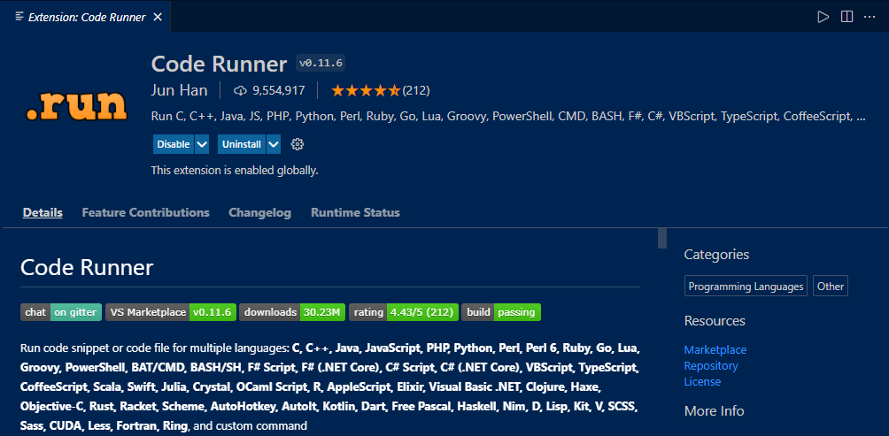
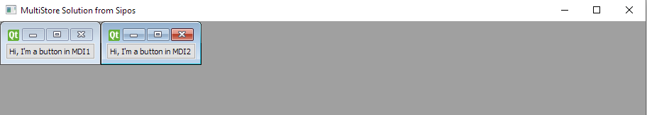

What is new in Ring 1.16?¶
In this chapter we will learn about the changes and new features in Ring 1.16 release.
List of changes and new features¶
Ring 1.16 comes with the next features!
Light GUILib
UTF-8 File Names in Microsoft Windows
Nested Methods Call in Separate Lines
Code Runner Extension support Ring
Zero and Strings
Better Installation Scripts
Better Documentation
MDI Windows Sample
More Improvements
Light GUILib¶
A lot of RingQt applications uses only QtCore, QtGui & QtWidget modules
These applications could use
load "lightguilib.ring"
Instead of
load "guilib.ring"
Also Ring Notepad, Distribute menu comes with a new option : Distribute light RingQt application
Using this option we can distribute lightguilib applications
For example, Distributing (Game of Life) using this option provides : target/windows folder

Size : 35 MB (Uncompressed)
Size : 13 MB (zip)
Size : 9 MB (exe) compressed using 7zip
So we can distribute these GUI applications using an installer less than 10 MB
Tip
if you need something smaller than that (1 MB) then switch to other libraries like LibUI
UTF-8 File Names in Microsoft Windows¶
In Ring 1.16, The Load command support using UTF-8 in the file name.
For example, We can write Arabic letters in the File Name!
Also the next functions support this feature
read()
write()
fopen()
Nested Methods Call in Separate Lines¶
In Ring 1.16, the Compiler support adding new lines after the method call and before the dot operator
Example:
myobj = new Start
myobj.one()
.two()
.three()
.go()
class start
func one
? "One"
return new one
class one
func two
? "Two"
return new two
class two
func three
? "Three"
return new three
class three
func go
? "Go!"
Output:
One
Two
Three
Go!
Code Runner Extension support Ring¶
If you are using Microsoft Visual Studio Code, We have good news for you!
The Code Runner Extension added support for the Ring programming language
After installing Code Runner
It’s recommended to modify this file :
C:/Users/YOURUSERNAME/.vscode/extensions/formulahendry.code-runner-0.11.6/package.json
Set the property (code-runner.fileDirectoryAsCwd) to (True)
So Code Runner can move to the file directory when we run it using (Ctrl+Alt+N)
"code-runner.fileDirectoryAsCwd": {
"type": "boolean",
"default": true,
"description": "Whether to use the directory of the file to be executed as the working directory.",
"scope": "resource"
},
Tip
Check ring/tools/editors/vscode folder to support Ring in VSCode
Zero and Strings¶
From Ring 1.0, the language do implicit conversion between numbers and strings
This is useful when we mix them in some situations like printing something on the screen
x = 10 # Number
? "x = " + x # x converted from Number to String
Also we can do arithmetic operations
x = "10" # String
? 5 + x # x converted from String to Number
The question is What happens if x content is not a number?
The answer : The result of the conversion will be (Zero)
x = "Test" # String - The content is not a number
? 5 + x # print (5) - x converted from String to Number (Zero)
The other operators like “=” and “!=” do the conversion too
Starting from Ring 1.16, They will be careful when we compare things to Zero
Example:
x = "Test"
? 0 = x # The result will be FALSE
? 0 != x # The result will be TRUE
This is useful when we compare between values inside Empty Lists and Strings
aList = list(10) # 10 items - Each item is Zero
? aList[1] + 5 # print (5)
? aList[1] = "Test" # False
? aList[1] = 0 # True
The other values (Not Zero) will follow the normal conversion rules
x = "5"
? 5 = x # True
? 6 != x # True
Better Installation Scripts¶
Ring 1.16 comes with better installation scripts on Linux and macOS
install.sh - Force creation of symlinks in case they already exist
install.sh - Remove quarantine flag
uninstall.sh - Delete symlinks from /usr/local accordingly
Better Documentation¶
All of the documentation chapters are revised and improved
MDI Windows Sample¶
The next sample is added to the samples folder

samples/UsingQt/MDIWindows/mdi_windows.ring
More Improvements¶
Sample: samples/AQuickStart/GUILib/gui1.ring - Better Code
Form Designer - Set the Button Event (If it’s Empty) from the Button Text
Form Designer - Order the controls based on the position (Not the Creation Order)
Form Designer - File System - File Name Encoding
Form Designer - Properties Window - Property Name Column - Better Colors
StdLib - IsPrime() Function - Better Code
RingQt - QListWidget Class - AddItem() Method - Convert Number to String
RingQt - More Qt constants are defined
Ring2EXE - Display usage information
Ring2EXE - Support Creating folders when copying files
Ring VM - ring_vm_error() - Better Code
Ring Compiler - Don’t display (Unrecognized Option) if we have a source code file